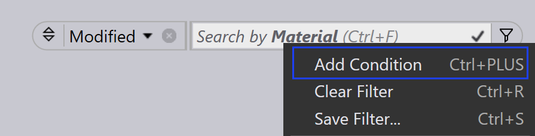

儲存篩選器
儲存的篩選器允許您在零件、工作和配置中重複使用經常應用的條件，從而簡化您的工作流程。每個模組都附帶預設篩選器，但站點管理員或程式設計師可以根據需要建立其他篩選器清單。重複使用儲存的篩選器可以節省時間，並有助於在搜尋中保持一致性。
-
按一下
 圖示以檢視預設篩選器。
圖示以檢視預設篩選器。
儲存篩選器的步驟
-
按一下
 圖示，選擇任何篩選器項目。
圖示，選擇任何篩選器項目。
-
從選定篩選器項目的下拉式選單中，選擇一個選項。已選取的條件旁邊會出現一個勾號。

-
要套用條件，按一下
圖示，然後選擇
新增條件（Ctrl+加號）]。您可以重複此步驟以新增多個條件。
-
要使用條件儲存這些選定的篩選器，按一下 保存篩選器… (Ctrl+S)]。

-
輸入名稱，然後按一下 _保存。

-
從 保存篩選器 對話方塊中，您也可以刪除任何先前儲存的篩選器。
-
這些篩選器將儲存在預設篩選器清單中，這裡 材料 已儲存到預設清單。

| SiteAdmin 和 Admin 建立的篩選器會在所有使用者之間共用。Programmer 和 Operator 建立的篩選器僅在 Programmers 和 Operators 使用者角色之間共用。 |
篩選器命令
| 命令 | 圖示 | 快捷鍵 | 說明 |
|---|---|---|---|
Clear Selection |
|
Ctrl+X |
取消選擇所有已選取的選項並重新整理篩選器項目檢視。 |
Select Highlighted |
|
Ctrl+A |
選擇所有反白顯示的選項。如果項目反白顯示不適用於所選欄位，此命令將保持停用狀態。 |
Match All |
|
& |
僅顯示符合所有選定條件的項目。 |
Pin In/Out Menu |
|
Ctrl+Down/Up |
當釘選時，即使當前焦點移動到另一個視窗，下拉式選單也會保持開啟狀態。 |
Close Menu |
|
Esc |
關閉下拉式選單。 |